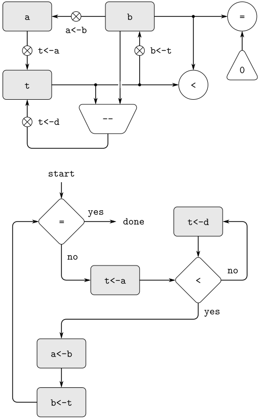

primitiveoperations that are actually very complex. For example, in sections 5.4 and 5.5 we will treat JavaScript's environment manipulations as primitive. Such abstraction is valuable because it allows us to ignore the details of parts of a machine so that we can concentrate on other aspects of the design. The fact that we have swept a lot of complexity under the rug, however, does not mean that a machine design is unrealistic. We can always replace the complex
primitivesby simpler primitive operations.
function remainder(n, d) {
return n < d
? n
: remainder(n - d, d);
}

assign("t", list(op("rem"), reg("a"), reg("b")))controller(
list(
"test_b",
test(list(op("="), reg("b"), constant(0))),
branch(label("gcd_done")),
assign("t", reg("a")),
"rem_loop",
test(list(op("<"), reg("t"), reg("b"))),
branch(label("rem_done")),
assign("t", list(op("-"), reg("t"), reg("b"))),
go_to(label("rem_loop")),
"rem_done",
assign("a", reg("b")),
assign("b", reg("t")),
go_to(label("test_b")),
"gcd_done"))
function sqrt(x) {
function is_good_enough(guess) {
return math_abs(square(guess) - x) < 0.001;
}
function improve(guess) {
return average(guess, x / guess);
}
function sqrt_iter(guess) {
return is_good_enough(guess)
? guess
: sqrt_iter(improve(guess));
}
return sqrt_iter(1);
}